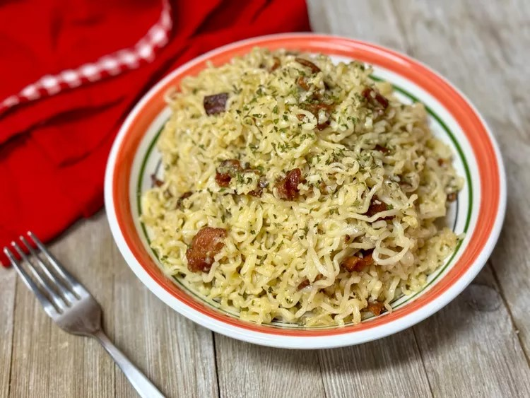

Ramen Recipe
This delicious ramen recipe is quick and easy to make, perfect for a comforting meal.

Ingredients
- 6 cups water
- 3 (3 ounce) packages instant ramen noodles, seasoning packets discarded
- 6 slices thick-cut bacon, chopped
- 2 large eggs
- 1/2 cup grated Parmesan cheese
- 2 tablespoons water
- 1/4 teaspoon dried parsley flakes
- 1/4 teaspoon freshly ground black pepper
- 2 cloves garlic, minced
Directions
- Bring 6 cups water to a boil in a large saucepan. Add noodles and cook for 3 minutes. Drain and set aside.
- Heat a large skillet over medium-high heat. Add bacon and cook until crisp, stirring often, about 8 minutes. Using a slotted spoon, transfer bacon to a plate lined with paper towels.
- Whisk eggs, Parmesan, 2 tablespoons water, parsley, and pepper in a mixing bowl. Set aside.
- Add garlic to the skillet with bacon drippings and cook over medium-high heat for 1 minute. Toss in drained noodles and cook 3 minutes more. Turn off heat.
- Pour in reserved egg mixture, toss to coat, and let sit 2 minutes before serving.